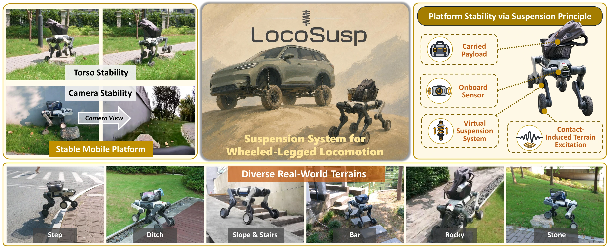
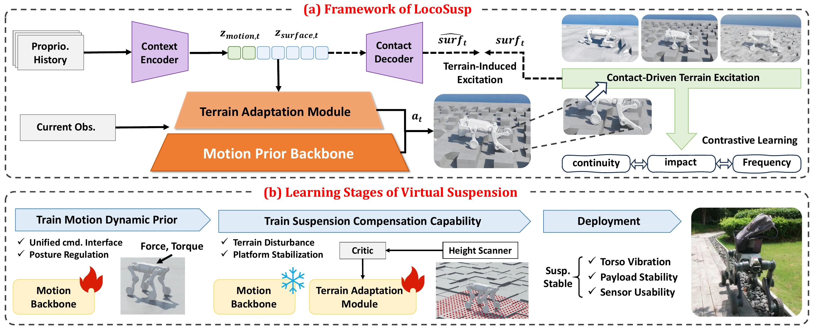
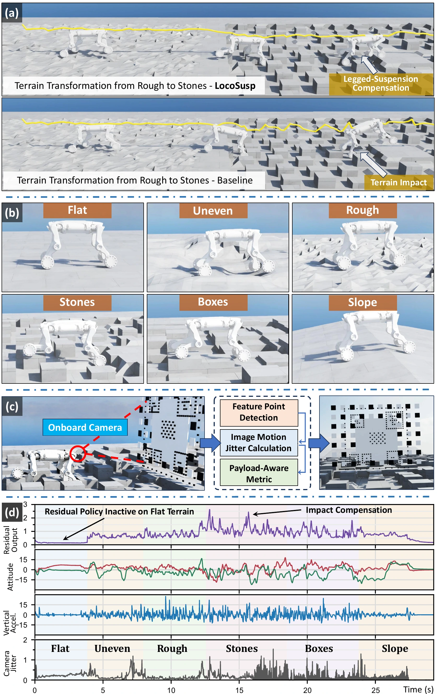
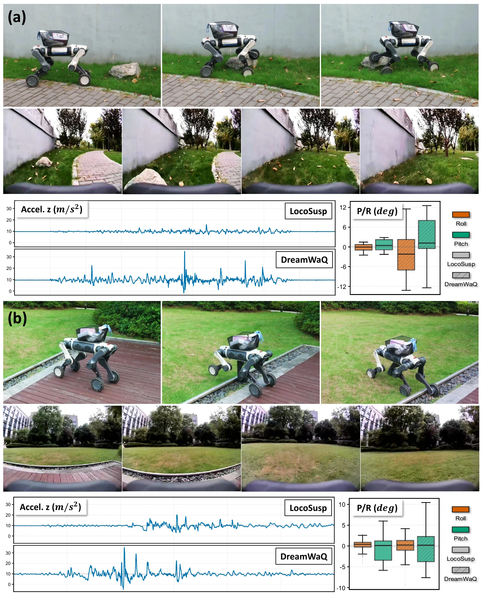
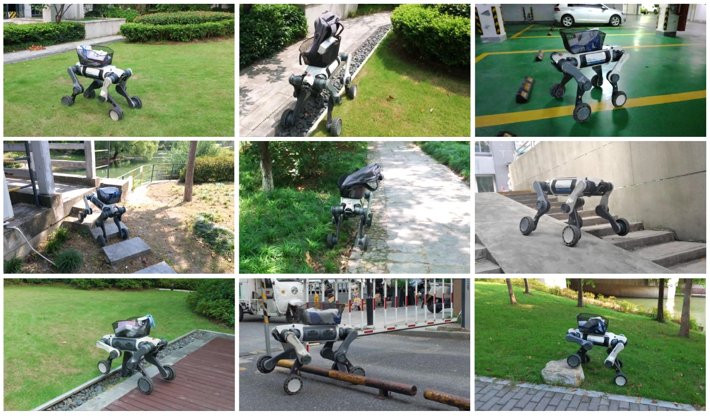

01
Virtual Suspension
Exploit redundant leg-body DoFs as an active suspension layer rather than treating the robot only as a terrain traverser.
Learning Virtual Suspension for
Stable Wheeled-Legged Mobile Platforms
Beyond simply crossing challenging terrain, a mobile robot should remain a stable and usable platform for cameras, sensors, and payloads.

Core perspective
A wheeled-legged robot is not only a terrain traverser. Its articulated leg-body system can act as a virtual suspension that attenuates terrain-induced excitation while preserving mobility.
Overview
Wheeled-legged robots have achieved strong terrain traversal, yet vibration, impact, and body oscillation can still degrade onboard sensing and payload usability.
LocoSusp reframes locomotion as a coupled mobility–stability problem. It learns a stability-preserving motion prior and a terrain-conditioned suspension response, using contact-driven proprioceptive history to adapt compensation to the excitation actually transmitted through wheel–ground interaction.
Exploit redundant leg-body DoFs as an active suspension layer rather than treating the robot only as a terrain traverser.
Represent terrain by impact, frequency, and continuity characteristics inferred from proprioceptive interaction history.
Freeze a reliable motion prior, then learn terrain-conditioned residual action and support-height adaptation for platform stabilization.
Method
The hierarchy protects a stable locomotion prior while allowing stronger compensation only when terrain interaction demands it.

Learn command tracking, posture regulation, support-height control, and disturbance rejection on flat and low-complexity terrain.
Encode recent proprioceptive and command history into motion and terrain-excitation latents, supervised by contact-driven spectral features.
Condition residual compensation and ride-height adaptation on the learned terrain excitation while keeping the motion backbone frozen.
Representation
LocoSusp organizes robot–terrain interaction around disturbance characteristics that matter for suspension response.
Discrete contact events and short-duration disturbance peaks.
Spectral content of contact-driven vertical motion over recent history.
Persistent roughness and smoothly evolving disturbance patterns.
Simulation Results
Main simulation comparison against DreamWaQ and PA-LOCO under constant-speed cruising and S-trajectory tracking.

↓ lower is better · ↑ higher is better
| Method | Constant-Speed Cruising | S-Trajectory Tracking | ||||||||
|---|---|---|---|---|---|---|---|---|---|---|
| SR ↑ | RMS az ↓ | RMS p/r ↓ | Tvib ↓ | Jcam ↓ | SR ↑ | Track err. ↓ | RMS az ↓ | RMS p/r ↓ | Tvib ↓ | |
| DreamWaQ | 90.1 | 4.43 | 5.52 | 0.15 | 16.1 | 91.3 | 0.67 | 2.78 | 4.59 | 0.21 |
| PA-LOCO | 60.8 | 8.38 | 8.18 | 0.24 | 34.3 | 87.1 | 1.11 | 2.91 | 5.92 | 0.29 |
| w/o residual | 85.7 | 6.21 | 7.86 | 0.21 | 29.8 | 82.3 | 0.65 | 3.45 | 6.13 | 0.44 |
| w/o terrain excitation | 89.4 | 5.12 | 6.78 | 0.18 | 24.6 | 88.5 | 0.58 | 2.81 | 5.24 | 0.32 |
| Avg. terrain excitation | 91.0 | 4.83 | 6.42 | 0.15 | 22.1 | 91.7 | 0.55 | 2.62 | 4.98 | 0.28 |
| w/o height adapt. | 92.1 | 4.04 | 6.01 | 0.11 | 15.2 | 92.9 | 0.53 | 2.30 | 4.57 | 0.23 |
| LocoSusp | 94.1 | 3.76 | 5.22 | 0.095 | 14.4 | 95.6 | 0.506 | 2.11 | 4.09 | 0.19 |
Real-World Validation
Hardware demonstrations cover discrete impact and terrain-transition disturbances with onboard camera observations and body-motion measurements.

Representative disturbances
Traversal over an isolated rock introduces a short, high-impact terrain disturbance.
A raised path to grass transition produces a continuous change in contact excitation.
The evaluation uses onboard RGB views together with torso IMU / kinematic logs to inspect physical transfer under real contact uncertainty.

Read the paper
Learning Virtual Suspension for Stable Wheeled-Legged Mobile Platforms
Anonymous submission · 8-page manuscript